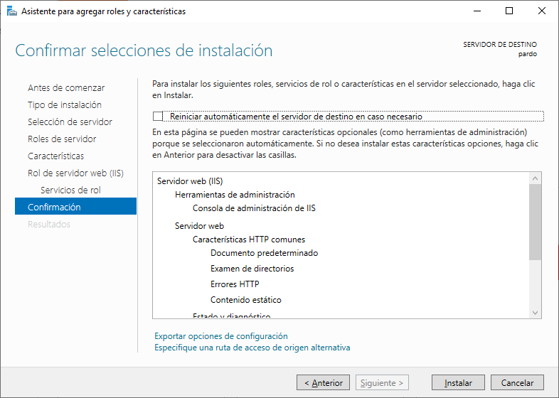

Abra la aplicación Administrador del servidor.
Acceda al menú Administrar y haga clic en Agregar roles y características.

En la pantalla Roles de servidor, seleccione la opción denominada:
Servidor web (IIS).
Haga clic en el botón Siguiente.

En la siguiente pantalla, haga clic en el botón Agregar características.
En la pantalla Características, haga clic en el botón Siguiente.

En la pantalla Servicios de rol, haga clic en el botón Siguiente.

ATENCIÓ
Abans de continuar
En aquest punt cal que escolliu un parell de opcions:
1. Per no fer servir internet i poder accedir als fitxers que necessita Windows:
Cal que seleccioneu l'opció
Especifique una ruta de acceso de origen alternativaAmb la ruta:
C:\Utils\sxs2. Per guaradar la configuració en un fitxer xml:
Cal que seleccioneu l'opció
Exportar opciones de configuracionAmb la següent carpeta que teniu al vostre servidor:
C:\Utils\Cami\Logs\DeploymentConfigTemplate.xmlEn la pantalla Resumen, haga clic en el botón Instalar.
¡Felicitaciones! ha terminado la instalación del servicio IIS en
un equipo que ejecuta Windows.
Tutorial IIS - Creación de una página de prueba
Inicie un nuevo símbolo del sistema de la línea de comandos de DOS.

El servicio IIS utiliza el siguiente directorio como el directorio raíz de las
páginas web:
c:\inetpub\wwwroot
Acceda al directorio raíz de IIS.
Cree una página de prueba denominada: test.html
<html>
<body>
<h1>Aquesta és una pàgina de prova!</h1>
</body>
</html>
Abra su navegador e introduzca la dirección IP de su servidor web más /test.html.
En nuestro ejemplo, se introdujo la siguiente URL en el navegador:
http://<laIpDelServidor>/test.html
Se debe presentar la página de prueba.